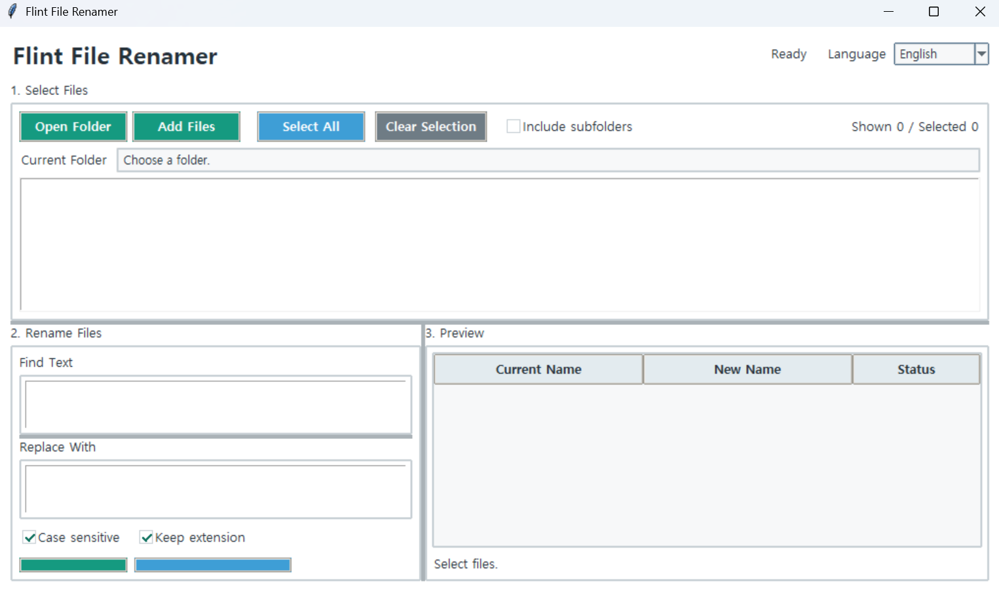

Flint String Finder
It is a GUI search tool for Windows that finds files containing a specific string across multiple drives or folders.
Flinthawk's toolbox is stocked with useful gear for the voyage.
It also contains a nuclear cannon, an anti-gravity cruise system, and a giant squid repeller, but those are not available to the public.
It is a GUI search tool for Windows that finds files containing a specific string across multiple drives or folders.

A GUI tool that converts PNG, JPG, WEBP, and BMP images into multi-size ICO files for Windows executables.

A tool for inserting the same text at the beginning or end of multiple text files at once.

A network diagnostic tool for Windows that helps identify whether internet disconnections or latency are occurring on the PC, router, external network connection, or DNS.

A tool for renaming multiple files at once. In addition to simple string replacement, it supports removing strings, adding text before or after filenames, numbering files, and batch renaming using a base name and sequence numbers.

A tool for finding and replacing strings across multiple text files at once. It automatically compares and displays the content before and after replacement, and only files that will actually be changed are shown in the results list.

A GUI-based site builder for creating static HTML websites from Markdown documents. It lets you keep your original Markdown files intact while configuring menus, banners, designs, and CSS, then generates the finished website in a separate output folder. Markdown documents that are not part of the top, bottom, left, or right menu layouts can also be converted into standalone HTML documents using the `HTML Conversion` feature.